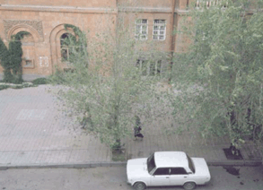

Green
Stork's Answers
An Intimate Photograph

On
the Way to School
A-av0dyan ys wyrxnovm
ym ;e3nigu5 ori dak ]row y4v lovaxvovm ym5 y4v ;e3ovm5 aba5
i]nylow ,enki gisakant santov.knyrow5 tovrs ym calis tbrox
dano. ‘o.ox5 ori yzryrin ,arova/ /a-yru amen 2my- zohvovm
yn wa¨arannyri dak yraqovm5 isg gdrova/ hasdapovn /a-i
goj.u /a¨a3ovm e orbys 3armar a;o-` ar¦a/a.gi syrm
waja-o. /yr gno] hamar5 orn anwyr] t=cohovm e gyankix ov
y.anagix` [ngadylow in25 or ‘n;’n;oxix qovsa’ylov
hamar ,r]anxovm ym nran5 aba anxnovm ka.akaganov;yan masin
panawijo.5 ,aqmad ov narti qa.axo. /yrovgnyri go.kow5 3aba.ovm
manrawaja- grbagnyri a-]¦` nor 2a3nyriznyrn
ovsovmnasirylov5 min[¦ in2 e mianovm ungyrs5 ori hyd
zrovxylow5 ovsovxi[nyrix po.okylow5 naq0rein dysa/
ginongarnyrn irar badmylow` anxnovm ynk barsgagan -ysdorani5
ygy.yxov ¦ gonyagi cor/arani m0dow ¦5 i wyr]o35
hasnovm tbrox1
The
Sound of Everyday Life
Click
here to download the Real Player Plugin

Through the
Kitchen
Mynk gu nyrga3axnynk mi
gyragovr5 oru dara/ova/ e ha3apnag polor yrgrnyrovm1 A3n
badrasdovm yn a3nbisi dovngi dyr¦nyrow5 ori bdov.ix cini
yn sdanovm1 A3t dyr¦nyru soworapar snnti my] [yn
0cdacor/ovm5 pa3x a3s ja,adysagi himnagan pa.atramasyrix megn
yn1 Y’ylis ga;sa3i my] tasavorovm ynk ,arkow1 A3sdy.ix
garo. ek yzragaxnyl5 or danderu hy,dov;yamp garo. e imanal` ow
kani had e gyryl1 A3s gyragri mi dysagu5 oru go[vovm e basovx5
hnovm gyryl yn basi =amanag1 Isg a3=m a3n naqundrovm yn
povsagyrnyru1 Ga3 na¦ ama-a3in dysagu5 oru badrasdovm yn
pan]ary.enix1 A3s gyragovru soworapar ovdovm yn ja,in5 pa3x
,ad hamy. linylov badja-ow5 pglignyru ovdovm yn naqaja,in`
[hampyrylow min[¦ ja,1
|